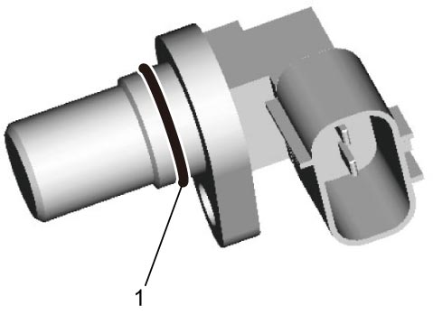
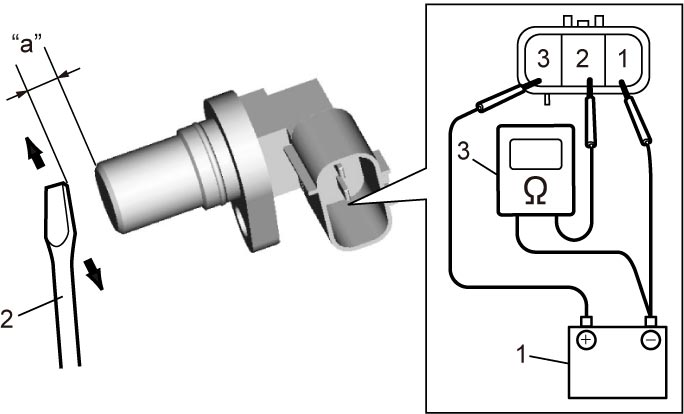

1C
| CKP Sensor Inspection |
1)Remove CKP sensor. 
2)Check the following points.
•O-ring (1) is free from damage.
•End face of CKP sensor and sensor plate teeth are free from any metal particles and damage.

•End face of CKP sensor and sensor plate teeth are free from any metal particles and damage.

 "Expand image")
3)Check CKP sensor as follows.
If faulty condition is found, replace CKP sensor.
If faulty condition is found, replace CKP sensor.
a)Connect battery (1) and ohmmeter (3) to CKP sensor as shown in figure.
b)Check that CKP sensor resistance varies as specified below by passing ferromagnetic material (iron) (2).
NOTE:
Keep approximately 1 mm (0.03 in) gap “a” between ferromagnetic material (iron) and end face of CKP sensor.
CKP sensor resistance
Resistance alternates between 220 Ω or smaller and infinity.

 "Expand image")